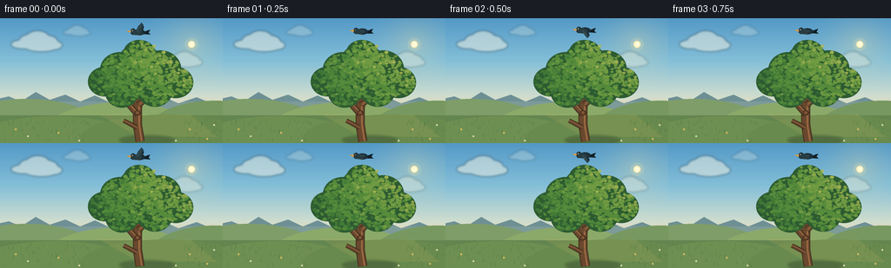
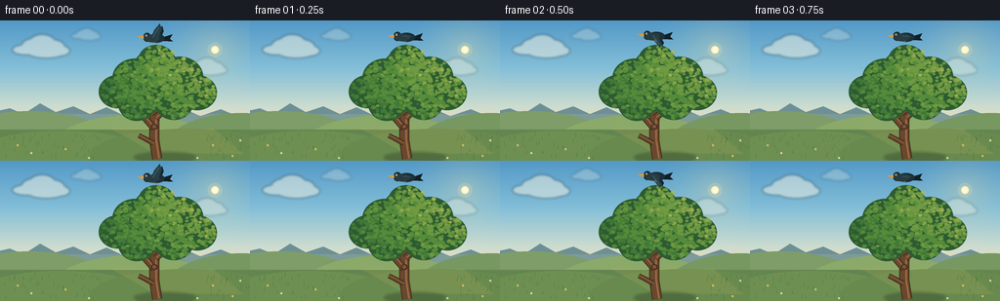
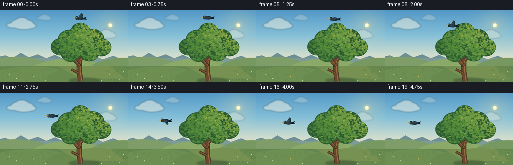
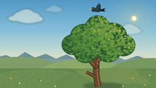
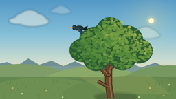
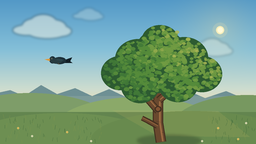
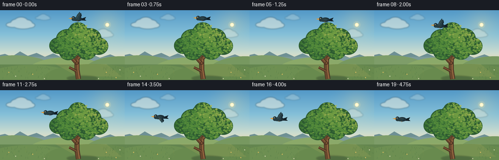
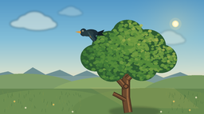
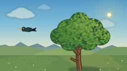
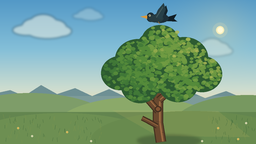

CODING AGENTS AS PIXEL WORLD MODELS
traex/DeepSeek-V4.1-Flash · dynamic_spatial_relationship_0044
点击播放 · 原生 RGB 像素
逐轮保存的候选
回放视频、检查图与代码变化。
每份候选均可单独播放。实际图片检查记录在下方工具轨迹中。
候选 01播放与检查图
点击播放 · 原生 RGB 像素


展开代码变化
--- 上一保存版本
+++ 本次保存版本
@@ -0,0 +1,445 @@
+from __future__ import annotations
+
+import math
+from pathlib import Path
+
+import numpy as np
+from PIL import Image, ImageDraw, ImageFilter
+
+import artifact_io
+
+
+CASE_DIR = Path(__file__).resolve().parent
+WIDTH = 256
+HEIGHT = 144
+FRAMES = 20
+FPS = 4.0
+SS = 4
+
+
+def scaled(value: float) -> int:
+ return int(round(value * SS))
+
+
+def point(x: float, y: float) -> tuple[int, int]:
+ return scaled(x), scaled(y)
+
+
+def box(x0: float, y0: float, x1: float, y1: float) -> tuple[int, int, int, int]:
+ return scaled(x0), scaled(y0), scaled(x1), scaled(y1)
+
+
+def lerp(a: float, b: float, t: float) -> float:
+ return a + (b - a) * t
+
+
+def smootherstep(t: float) -> float:
+ t = max(0.0, min(1.0, t))
+ return t * t * t * (t * (t * 6.0 - 15.0) + 10.0)
+
+
+def make_sky() -> Image.Image:
+ """Build a softly banded late-afternoon sky without texture noise."""
+ stops = [
+ (0.00, np.array([83, 153, 199], dtype=float)),
+ (0.34, np.array([132, 191, 216], dtype=float)),
+ (0.62, np.array([206, 221, 207], dtype=float)),
+ (0.78, np.array([246, 219, 171], dtype=float)),
+ (1.00, np.array([239, 200, 149], dtype=float)),
+ ]
+ ys = np.linspace(0.0, 1.0, HEIGHT * SS)
+ colors = np.empty((HEIGHT * SS, 3), dtype=float)
+ for (a_pos, a_color), (b_pos, b_color) in zip(stops[:-1], stops[1:]):
+ mask = (ys >= a_pos) & (ys <= b_pos)
+ local = (ys[mask] - a_pos) / (b_pos - a_pos)
+ local = local[:, None]
+ colors[mask] = a_color * (1.0 - local) + b_color * local
+ colors[ys < stops[0][0]] = stops[0][1]
+ colors[ys > stops[-1][0]] = stops[-1][1]
+
+ rgb = np.repeat(colors[:, None, :], WIDTH * SS, axis=1)
+
+ # Broad, low-opacity sunlight gives the sky a directional glow.
+ yy, xx = np.mgrid[0 : HEIGHT * SS, 0 : WIDTH * SS]
+ glow_distance = np.sqrt((xx - 220 * SS) ** 2 + (yy - 30 * SS) ** 2)
+ glow = np.clip(1.0 - glow_distance / (68 * SS), 0.0, 1.0) ** 2
+ warm = np.array([255, 229, 159], dtype=float)
+ rgb = rgb * (1.0 - 0.28 * glow[..., None]) + warm * (0.28 * glow[..., None])
+
+ return Image.fromarray(np.clip(rgb, 0, 255).astype(np.uint8), "RGB")
+
+
+def add_clouds(image: Image.Image) -> None:
+ cloud_layer = Image.new("RGBA", image.size, (0, 0, 0, 0))
+ draw = ImageDraw.Draw(cloud_layer, "RGBA")
+
+ clouds = [
+ (42, 30, 1.05, 120),
+ (88, 16, 0.55, 58),
+ (211, 50, 0.78, 74),
+ ]
+ for cx, cy, scale, alpha in clouds:
+ parts = [
+ (-15, 0, 13, 5),
+ (-8, -4, 11, 7),
+ (1, -7, 13, 8),
+ (11, -3, 12, 7),
+ (19, 1, 9, 5),
+ (5, 2, 19, 6),
+ ]
+ for dx, dy, rx, ry in parts:
+ draw.ellipse(
+ box(
+ cx + dx * scale - rx * scale,
+ cy + dy * scale - ry * scale,
+ cx + dx * scale + rx * scale,
+ cy + dy * scale + ry * scale,
+ ),
+ fill=(255, 247, 226, alpha),
+ )
+
+ cloud_layer = cloud_layer.filter(ImageFilter.GaussianBlur(1.25 * SS))
+ image.alpha_composite(cloud_layer) if image.mode == "RGBA" else image.paste(
+ cloud_layer, (0, 0), cloud_layer
+ )
+
+
+def add_sun(image: Image.Image) -> None:
+ draw = ImageDraw.Draw(image, "RGBA")
+ draw.ellipse(box(212.5, 22.5, 227.5, 37.5), fill=(255, 235, 169, 42))
+ draw.ellipse(box(216.0, 26.0, 224.0, 34.0), fill=(255, 242, 184, 235))
+ draw.ellipse(box(217.4, 27.2, 222.8, 32.8), fill=(255, 250, 218, 255))
+
+
+def add_mountains_and_meadow(image: Image.Image) -> None:
+ draw = ImageDraw.Draw(image, "RGBA")
+
+ # Distant blue-green ridge.
+ ridge = [
+ point(-8, 103),
+ point(-8, 94),
+ point(10, 90),
+ point(24, 96),
+ point(41, 85),
+ point(57, 94),
+ point(75, 88),
+ point(92, 96),
+ point(109, 89),
+ point(128, 98),
+ point(146, 91),
+ point(163, 98),
+ point(184, 89),
+ point(205, 98),
+ point(226, 91),
+ point(245, 99),
+ point(264, 94),
+ point(264, 112),
+ point(-8, 112),
+ ]
+ draw.polygon(ridge, fill=(110, 144, 148, 255))
+
+ # A pale haze band separates the ridge from the near hills.
+ draw.polygon(
+ [point(-8, 96), point(264, 96), point(264, 108), point(-8, 108)],
+ fill=(206, 213, 177, 40),
+ )
+
+ # Layered meadow hills.
+ draw.ellipse(box(-55, 93, 115, 160), fill=(126, 157, 105, 255))
+ draw.ellipse(box(52, 97, 224, 165), fill=(139, 169, 105, 255))
+ draw.ellipse(box(170, 95, 324, 164), fill=(119, 152, 96, 255))
+ draw.polygon(
+ [point(-8, 112), point(264, 112), point(264, 150), point(-8, 150)],
+ fill=(99, 133, 79, 255),
+ )
+ draw.ellipse(box(-30, 113, 155, 166), fill=(109, 143, 82, 255))
+ draw.ellipse(box(91, 111, 291, 168), fill=(104, 138, 78, 255))
+
+ # Warm sunlit band through the middle of the meadow.
+ draw.polygon(
+ [
+ point(112, 110),
+ point(218, 111),
+ point(250, 137),
+ point(158, 136),
+ ],
+ fill=(204, 185, 102, 36),
+ )
+
+
+def draw_branch(
+ draw: ImageDraw.ImageDraw,
+ points: list[tuple[float, float]],
+ width: float,
+ outline: tuple[int, int, int, int],
+ fill: tuple[int, int, int, int],
+ highlight: tuple[int, int, int, int],
+) -> None:
+ scaled_points = [point(x, y) for x, y in points]
+ draw.line(scaled_points, fill=outline, width=scaled(width + 2.0), joint="curve")
+ draw.line(scaled_points, fill=fill, width=scaled(width), joint="curve")
+ shifted = [point(x + width * 0.20, y - width * 0.10) for x, y in points]
+ draw.line(
+ shifted,
+ fill=highlight,
+ width=max(1, scaled(width * 0.22)),
+ joint="curve",
+ )
+
+
+def add_tree(image: Image.Image) -> None:
+ draw = ImageDraw.Draw(image, "RGBA")
+ rng = np.random.default_rng(44219)
+
+ # Grounded shadow.
+ shadow_layer = Image.new("RGBA", image.size, (0, 0, 0, 0))
+ shadow_draw = ImageDraw.Draw(shadow_layer, "RGBA")
+ shadow_draw.ellipse(box(137, 135, 201, 146), fill=(38, 53, 37, 88))
+ shadow_layer = shadow_layer.filter(ImageFilter.GaussianBlur(1.4 * SS))
+ image.paste(shadow_layer, (0, 0), shadow_layer)
+
+ outline = (68, 48, 32, 255)
+ bark = (105, 72, 46, 255)
+ highlight = (157, 107, 66, 255)
+ branches = [
+ ([(161, 142), (158, 123), (158, 103), (161, 83), (160, 66)], 8.5),
+ ([(158, 111), (145, 96), (130, 86), (116, 80)], 5.0),
+ ([(159, 100), (175, 86), (192, 76), (207, 70)], 5.4),
+ ([(160, 88), (148, 74), (141, 65)], 3.8),
+ ([(161, 82), (174, 69), (181, 60)], 3.6),
+ ([(157, 126), (148, 121), (142, 118)], 3.2),
+ ]
+ for branch_points, branch_width in branches:
+ draw_branch(draw, branch_points, branch_width, outline, bark, highlight)
+
+ # Knots and a few bark marks make the trunk readable at low resolution.
+ draw.ellipse(box(154.5, 106, 161.5, 112), fill=(67, 47, 33, 255))
+ draw.ellipse(box(155.7, 107.0, 160.1, 110.8), fill=(129, 83, 51, 255))
+ for x, y, length in [(156, 121, 3.8), (162, 132, 3.0), (158, 92, 2.7)]:
+ draw.line(
+ [point(x, y), point(x + length, y + 0.8)],
+ fill=(68, 47, 32, 170),
+ width=max(1, scaled(0.45)),
+ )
+
+ # The canopy is assembled from overlapping crowns, then textured with
+ # individually lit leaf clusters.
+ crowns = [
+ (160, 49, 24, 20),
+ (138, 59, 23, 20),
+ (184, 58, 24, 21),
+ (120, 73, 19, 17),
+ (202, 74, 20, 18),
+ (157, 71, 27, 22),
+ (178, 84, 20, 18),
+ (140, 86, 19, 17),
+ (160, 39, 18, 14),
+ ]
+ for cx, cy, rx, ry in crowns:
+ draw.ellipse(box(cx - rx, cy - ry, cx + rx, cy + ry), fill=(45, 91, 49, 255))
+
+ palette = [
+ (39, 82, 45),
+ (51, 102, 50),
+ (65, 121, 55),
+ (85, 139, 58),
+ (112, 155, 66),
+ (145, 170, 76),
+ ]
+ for cx, cy, rx, ry in crowns:
+ count = int(125 * (rx * ry) / (24 * 20))
+ for _ in range(count):
+ angle = rng.uniform(0, math.tau)
+ radius = math.sqrt(rng.random())
+ x = cx + math.cos(angle) * radius * rx * 0.93
+ y = cy + math.sin(angle) * radius * ry * 0.90
+ light = (
+ 0.48
+ + 0.42 * (x - 112.0) / 112.0
+ + 0.25 * (89.0 - y) / 62.0
+ + rng.normal(0.0, 0.10)
+ )
+ color = palette[max(0, min(len(palette) - 1, int(light * (len(palette) - 1))))]
+ radius_px = rng.uniform(1.2, 2.7)
+ draw.ellipse(
+ box(
+ x - radius_px,
+ y - radius_px * 0.72,
+ x + radius_px,
+ y + radius_px * 0.72,
+ ),
+ fill=(*color, 230),
+ )
+
+ # Fine highlights pick out the sun-facing right and upper edges.
+ highlight_points = [
+ (177, 32, 2.0),
+ (188, 39, 2.2),
+ (197, 51, 1.8),
+ (205, 63, 1.7),
+ (211, 77, 1.6),
+ (174, 56, 1.8),
+ (163, 30, 1.4),
+ ]
+ for x, y, radius in highlight_points:
+ draw.ellipse(
+ box(x - radius, y - radius * 0.7, x + radius, y + radius * 0.7),
+ fill=(173, 184, 86, 210),
+ )
+
+
+def add_meadow_details(image: Image.Image) -> None:
+ draw = ImageDraw.Draw(image, "RGBA")
+ rng = np.random.default_rng(9107)
+
+ # Grass is concentrated near the frame edges so the tree and bird remain
+ # the clear focal points.
+ for _ in range(150):
+ if rng.random() < 0.58:
+ x = rng.uniform(2, 102)
+ else:
+ x = rng.uniform(208, 254)
+ y = rng.uniform(118, 143)
+ height = rng.uniform(1.8, 4.8)
+ lean = rng.uniform(-1.2, 1.2)
+ color = (52, 95, 52, 190) if rng.random() < 0.56 else (135, 151, 74, 170)
+ draw.line(
+ [point(x, y), point(x + lean, y - height)],
+ fill=color,
+ width=max(1, scaled(0.34)),
+ )
+
+ # A restrained sprinkle of flowers adds scale without visual clutter.
+ for x, y, warm in [
+ (18, 128, True),
+ (32, 136, False),
+ (67, 132, True),
+ (91, 141, False),
+ (218, 128, True),
+ (238, 139, True),
+ (246, 123, False),
+ (202, 141, False),
+ ]:
+ if warm:
+ petal = (240, 205, 103, 235)
+ center = (144, 93, 45, 255)
+ else:
+ petal = (232, 232, 204, 220)
+ center = (204, 170, 72, 255)
+ draw.ellipse(box(x - 0.9, y - 0.9, x + 0.9, y + 0.9), fill=petal)
+ draw.ellipse(box(x - 0.35, y - 0.35, x + 0.35, y + 0.35), fill=center)
+
+
+def wing_polygon(
+ cx: float,
+ cy: float,
+ flap: float,
+ scale: float = 1.0,
+ x_offset: float = 0.0,
+) -> list[tuple[float, float]]:
+ """A tapered side-view wing whose tip rises and falls with flap."""
+ shoulder_a = (cx - 3.8 + x_offset, cy - 1.4)
+ shoulder_b = (cx + 1.0 + x_offset, cy + 1.0)
+ tip = (cx + 2.7 + x_offset, cy - 1.2 - 10.2 * flap)
+ mid_a = (lerp(shoulder_a[0], tip[0], 0.55) - 1.3, lerp(shoulder_a[1], tip[1], 0.52))
+ mid_b = (lerp(shoulder_b[0], tip[0], 0.68) + 2.0, lerp(shoulder_b[1], tip[1], 0.62))
+ points = [shoulder_a, mid_a, tip, mid_b, shoulder_b]
+ return [(cx + (x - cx) * scale, cy + (y - cy) * scale) for x, y in points]
+
+
+def add_bird(image: Image.Image, cx: float, cy: float, flap: float) -> None:
+ draw = ImageDraw.Draw(image, "RGBA")
+ dark = (18, 31, 38, 255)
+ body = (28, 47, 56, 255)
+ wing = (39, 64, 72, 255)
+ wing_light = (68, 91, 92, 255)
+ beak = (221, 153, 59, 255)
+ eye = (244, 235, 190, 255)
+
+ # Far wing, then tail and body, gives the bird a small amount of depth.
+ far_wing = wing_polygon(cx, cy, flap, scale=0.84, x_offset=2.0)
+ draw.polygon([point(x, y) for x, y in far_wing], fill=(20, 38, 46, 255))
+
+ draw.polygon(
+ [
+ point(cx + 4.4, cy - 0.4),
+ point(cx + 12.5, cy - 3.2),
+ point(cx + 10.5, cy + 0.4),
+ point(cx + 13.0, cy + 2.6),
+ point(cx + 5.0, cy + 2.2),
+ ],
+ fill=dark,
+ )
+ draw.ellipse(box(cx - 6.6, cy - 3.5, cx + 6.5, cy + 3.5), fill=body)
+ draw.ellipse(box(cx - 10.3, cy - 4.3, cx - 4.1, cy + 2.8), fill=body)
+ draw.ellipse(box(cx - 9.0, cy - 2.6, cx + 2.4, cy + 3.1), fill=(39, 60, 65, 255))
+
+ # Near wing.
+ near_wing = wing_polygon(cx, cy, flap, scale=1.0, x_offset=0.0)
+ draw.polygon([point(x, y) for x, y in near_wing], fill=wing)
+ draw.line(
+ [point(cx - 2.8, cy - 0.7), point(cx + 2.1, cy - 1.1 - 7.4 * flap)],
+ fill=wing_light,
+ width=max(1, scaled(0.55)),
+ )
+
+ # Beak and eye establish the leftward heading.
+ draw.polygon(
+ [
+ point(cx - 9.8, cy - 2.1),
+ point(cx - 15.0, cy - 1.3),
+ point(cx - 9.8, cy + 0.5),
+ ],
+ fill=beak,
+ )
+ draw.ellipse(box(cx - 8.6, cy - 2.8, cx - 7.2, cy - 1.4), fill=eye)
+ draw.ellipse(box(cx - 8.2, cy - 2.4, cx - 7.6, cy - 1.8), fill=(13, 22, 24, 255))
+
+ # Tucked feet are a final, tiny recognition cue.
+ draw.line(
+ [point(cx - 1.5, cy + 2.6), point(cx - 0.2, cy + 4.3)],
+ fill=(177, 119, 52, 255),
+ width=max(1, scaled(0.35)),
+ )
+
+
+def bird_pose(frame_index: int) -> tuple[float, float, float]:
+ if frame_index <= 2:
+ x = 160.0 + 0.35 * math.sin(frame_index * 1.15)
+ y = 15.0 + 0.55 * math.cos(frame_index * 1.15)
+ else:
+ u = (frame_index - 2) / (FRAMES - 3)
+ eased = smootherstep(u)
+ x = lerp(160.0, 59.5, eased)
+ y = lerp(15.0, 60.5, eased) + 6.2 * math.sin(math.pi * eased)
+
+ # One readable wingbeat every four frames, with an airborne body bob.
+ flap = math.sin(math.pi / 2 + math.tau * frame_index / 4.0)
+ y += 0.55 * flap
+ return x, y, flap
+
+
+def render_frame(frame_index: int) -> np.ndarray:
+ base = make_sky()
+ add_clouds(base)
+ add_sun(base)
+ add_mountains_and_meadow(base)
+ add_tree(base)
+ add_meadow_details(base)
+
+ bx, by, flap = bird_pose(frame_index)
+ add_bird(base, bx, by, flap)
+
+ frame = base.resize((WIDTH, HEIGHT), Image.Resampling.LANCZOS)
+ return np.asarray(frame.convert("RGB"), dtype=np.uint8)
+
+
+def main() -> None:
+ frames = np.stack([render_frame(index) for index in range(FRAMES)], axis=0)
+ assert frames.shape == (FRAMES, HEIGHT, WIDTH, 3)
+ assert frames.dtype == np.uint8
+ artifact_io.save(frames, CASE_DIR)
+
+
+if __name__ == "__main__":
+ main()
候选 02播放与检查图
点击播放 · 原生 RGB 像素


展开代码变化
--- 上一保存版本
+++ 本次保存版本
@@ -347,7 +347,9 @@
return [(cx + (x - cx) * scale, cy + (y - cy) * scale) for x, y in points]
-def add_bird(image: Image.Image, cx: float, cy: float, flap: float) -> None:
+def add_bird(
+ image: Image.Image, cx: float, cy: float, flap: float, size: float = 1.32
+) -> None:
draw = ImageDraw.Draw(image, "RGBA")
dark = (18, 31, 38, 255)
body = (28, 47, 56, 255)
@@ -357,61 +359,74 @@
eye = (244, 235, 190, 255)
# Far wing, then tail and body, gives the bird a small amount of depth.
- far_wing = wing_polygon(cx, cy, flap, scale=0.84, x_offset=2.0)
+ def bird_point(dx: float, dy: float) -> tuple[int, int]:
+ return point(cx + dx * size, cy + dy * size)
+
+ def bird_box(
+ x0: float, y0: float, x1: float, y1: float
+ ) -> tuple[int, int, int, int]:
+ return box(
+ cx + x0 * size,
+ cy + y0 * size,
+ cx + x1 * size,
+ cy + y1 * size,
+ )
+
+ far_wing = wing_polygon(cx, cy, flap, scale=0.84 * size, x_offset=2.0 * size)
draw.polygon([point(x, y) for x, y in far_wing], fill=(20, 38, 46, 255))
draw.polygon(
[
- point(cx + 4.4, cy - 0.4),
- point(cx + 12.5, cy - 3.2),
- point(cx + 10.5, cy + 0.4),
- point(cx + 13.0, cy + 2.6),
- point(cx + 5.0, cy + 2.2),
+ bird_point(4.4, -0.4),
+ bird_point(12.5, -3.2),
+ bird_point(10.5, 0.4),
+ bird_point(13.0, 2.6),
+ bird_point(5.0, 2.2),
],
fill=dark,
)
- draw.ellipse(box(cx - 6.6, cy - 3.5, cx + 6.5, cy + 3.5), fill=body)
- draw.ellipse(box(cx - 10.3, cy - 4.3, cx - 4.1, cy + 2.8), fill=body)
- draw.ellipse(box(cx - 9.0, cy - 2.6, cx + 2.4, cy + 3.1), fill=(39, 60, 65, 255))
+ draw.ellipse(bird_box(-6.6, -3.5, 6.5, 3.5), fill=body)
+ draw.ellipse(bird_box(-10.3, -4.3, -4.1, 2.8), fill=body)
+ draw.ellipse(bird_box(-9.0, -2.6, 2.4, 3.1), fill=(39, 60, 65, 255))
# Near wing.
- near_wing = wing_polygon(cx, cy, flap, scale=1.0, x_offset=0.0)
+ near_wing = wing_polygon(cx, cy, flap, scale=size, x_offset=0.0)
draw.polygon([point(x, y) for x, y in near_wing], fill=wing)
draw.line(
- [point(cx - 2.8, cy - 0.7), point(cx + 2.1, cy - 1.1 - 7.4 * flap)],
+ [bird_point(-2.8, -0.7), bird_point(2.1, -1.1 - 7.4 * flap)],
fill=wing_light,
- width=max(1, scaled(0.55)),
+ width=max(1, scaled(0.55 * size)),
)
# Beak and eye establish the leftward heading.
draw.polygon(
[
- point(cx - 9.8, cy - 2.1),
- point(cx - 15.0, cy - 1.3),
- point(cx - 9.8, cy + 0.5),
+ bird_point(-9.8, -2.1),
+ bird_point(-15.0, -1.3),
+ bird_point(-9.8, 0.5),
],
fill=beak,
)
- draw.ellipse(box(cx - 8.6, cy - 2.8, cx - 7.2, cy - 1.4), fill=eye)
- draw.ellipse(box(cx - 8.2, cy - 2.4, cx - 7.6, cy - 1.8), fill=(13, 22, 24, 255))
+ draw.ellipse(bird_box(-8.6, -2.8, -7.2, -1.4), fill=eye)
+ draw.ellipse(bird_box(-8.2, -2.4, -7.6, -1.8), fill=(13, 22, 24, 255))
# Tucked feet are a final, tiny recognition cue.
draw.line(
- [point(cx - 1.5, cy + 2.6), point(cx - 0.2, cy + 4.3)],
+ [bird_point(-1.5, 2.6), bird_point(-0.2, 4.3)],
fill=(177, 119, 52, 255),
- width=max(1, scaled(0.35)),
+ width=max(1, scaled(0.35 * size)),
)
def bird_pose(frame_index: int) -> tuple[float, float, float]:
if frame_index <= 2:
x = 160.0 + 0.35 * math.sin(frame_index * 1.15)
- y = 15.0 + 0.55 * math.cos(frame_index * 1.15)
+ y = 17.0 + 0.55 * math.cos(frame_index * 1.15)
else:
u = (frame_index - 2) / (FRAMES - 3)
eased = smootherstep(u)
- x = lerp(160.0, 59.5, eased)
- y = lerp(15.0, 60.5, eased) + 6.2 * math.sin(math.pi * eased)
+ x = lerp(160.0, 57.0, eased)
+ y = lerp(17.0, 60.0, eased) + 6.2 * math.sin(math.pi * eased)
# One readable wingbeat every four frames, with an airborne body bob.
flap = math.sin(math.pi / 2 + math.tau * frame_index / 4.0)
可观测工具轨迹
实际执行的命令与返回图片。
命令 1exit 0
/bin/bash -c "pwd && rg --files -g '"'!*__pycache__*'"' | sed -n '1,160p'"
命令 2exit 0
/bin/bash -c "sed -n '1,240p' prompt.txt"
命令 3exit 0
/bin/bash -c "sed -n '1,280p' GENERATION_RULES.md"
命令 4exit 0
/bin/bash -c 'cat task_spec.json'
命令 5exit 0
/bin/bash -c "sed -n '1,260p' artifact_io.py"
命令 6exit 0
/bin/bash -c "sed -n '1,260p' player_template.html"
命令 7exit 0
/bin/bash -c "python - <<'PY'
import PIL, numpy
print('PIL', PIL.__version__)
print('numpy', numpy.__version__)
try:
import imageio
print('imageio', imageio.__version__)
except Exception as e: print('imageio unavailable', e)
try:
import cv2
print('cv2', cv2.__version__)
except Exception as e: print('cv2 unavailable', e)
PY"命令 8exit 0
/bin/bash -c 'python generate.py'
命令 9exit 0
/bin/bash -c 'python generate.py'
命令 10exit 0
/bin/bash -c "python -m py_compile generate.py && test -s index.html && test -s pixels.npz && test -s inspection.png && echo 'runnable and artifacts present'"
命令 11exit 0
/bin/bash -c "python - <<'PY'
from pathlib import Path
import json
import numpy as np
from PIL import Image
root=Path('.')
spec=json.loads((root/'task_spec.json').read_text())
z=np.load(root/'pixels.npz')['pixels']
frames=sorted((root/'frames').glob('*.png'))
print('pixels', z.shape, z.dtype, 'spec', spec)
print('png_frames', len(frames), 'first_last', frames[0].name, frames[-1].name)
ims=[np.asarray(Image.open(p).convert('RGB')) for p in frames]
arr=np.stack(ims)
print('png_shape', arr.shape, 'range', int(arr.min()), int(arr.max()))
print('nonblank', int((arr.max(axis=3)>8).sum()), 'changed_pixels_first_last', int((arr[0]"'!=arr[-1]).sum()))
print('"'artifacts', [p.name for p in sorted(root.iterdir()) if p.is_file()])
PY"命令 12exit 0
/bin/bash -c 'git status --short 2>/dev/null || true'
视觉工具实际返回图片 1

视觉工具实际返回图片 2

视觉工具实际返回图片 3

视觉工具实际返回图片 4

视觉工具实际返回图片 5

视觉工具实际返回图片 6

视觉工具实际返回图片 7

视觉工具实际返回图片 8

保存候选 2 份；完成命令 12 次；可验证图片返回 8 张。原始 API 响应与完整日志保留在本地。